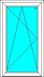
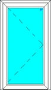
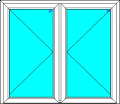
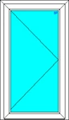
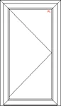
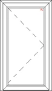
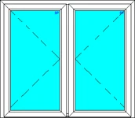

Balkong- & altandörrar
Balkongdörrar, altandörrar och pardörrar i PVC – stabila, säkra och lättmonterade.

Vi erbjuder ett stort urval av balkongdörrar och pardörrar. Dörren har spanjolettlåsning, vilket låser dörren runt om. Säkerhetsklass V-1 och V-2 finns som tillval.
Modulerna är stabila och lättmonterade. Ett stort urval av konstruktionslösningar garanterar att du alltid hittar något som passar dig. Olika färger på profiler och beslag erbjuds som tillval.
Välj mellan standardtröskel på 67 mm och låg aluminiumtröskel.
Dörrarna finns med 2- och 3-glas energikassetter fyllda med argon, värmekoefficient 1,0 W/m²K respektive 0,7 W/m²K. Hela konstruktionen ligger på 1,3 W/m²K med dubbelglas och 1,0 W/m²K med trippelglas.
Tillverkning och utställning finns i Lilla Edet.
Dörrtyper
Samtliga kan kompletteras med handtag och lås, glas, bröstning och spröjs.







Monterat hos våra kunder


Berätta vad du planerar – vi tar fram en offert.
Allt tillverkas på beställning i vår fabrik i Lödöse. Välkommen att besöka utställningen i Lilla Edet, eller skicka en förfrågan direkt.